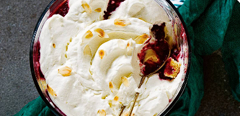

Eton mess trifle
Welk toetje is gemaakt om te delen? De eton mess, natuurlijk.
Ingrediënten
- 6 middelgrote eieren
- 150 g kristalsuiker
- 1 tl vanillearoma
- 50 g custardpoeder
- 500 ml verse slagroom
- 500 ml volle melk
- 4 el fruitspread bosvruchten
- 1kg diepvries zomerfruit
- 400 g roombotercake
- 150 ml cream sherry
- 25 g amandelschaafsel
Bereidingsweize
- Splits de eieren, het eiwit wordt niet gebrukt.
Klop de dooiers met 1/3 van de suiker, het vanillearoma en de custardpoeder schuimig.
- breng 1/2 van de slagroom met 30 g suiker (per 10 personen) en de melk tegen de kook aan.
Voeg een scheut van deze hete room al roerend toe aan het eischuim.
Schenk daarna dit mengsel al roerend bij het roommengsel in de pan.
Verwarm al roerend tot een dikke vla. Laat de vla afkoelen tot lauwwarm, roer regelmatig.
- Schep ondertussen de fruitspread door het zomerfruit. Pureer 150 g van dit mengsel met de staafmixer en houd apart.
- Snijd de cake in blokjes, doe in de schal en besprenkel met de sherry.
Schep de rest van de fruitpuree op de cake. Schenk de vla erover en strijk glad.
Zet minimaal 2 uur in de koelkast.
- Rooster het amandelschaafsel in 3 min. goudbruin in een koekenpan zonder olie of boter.
Klop vlak voor het serveren de rest van de slagroom stijf met de rest van de suiker.
Verdeel de achtergehouden fruitpuree over de vla, schep de slagroom erop en bestrooi met het amandelschaafsel.

Tip Het heeft veel zuivelproducten en fruit, lekker!